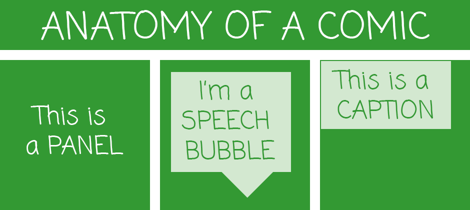
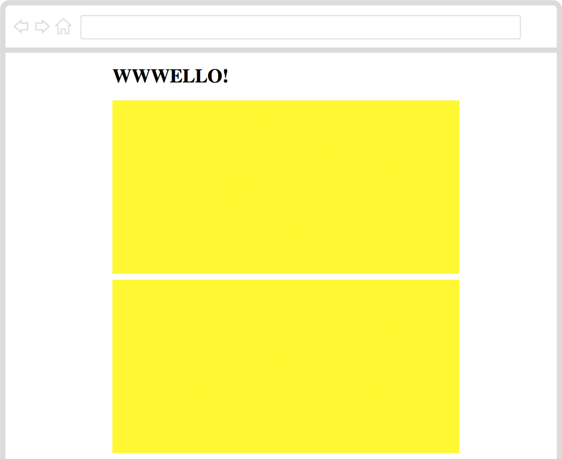
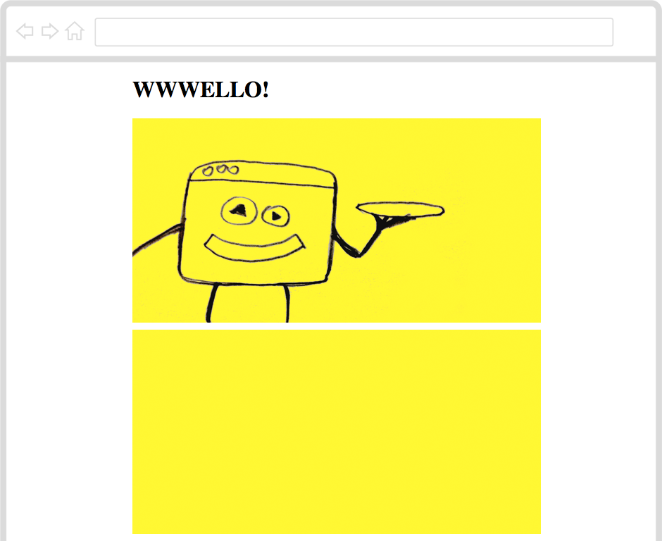
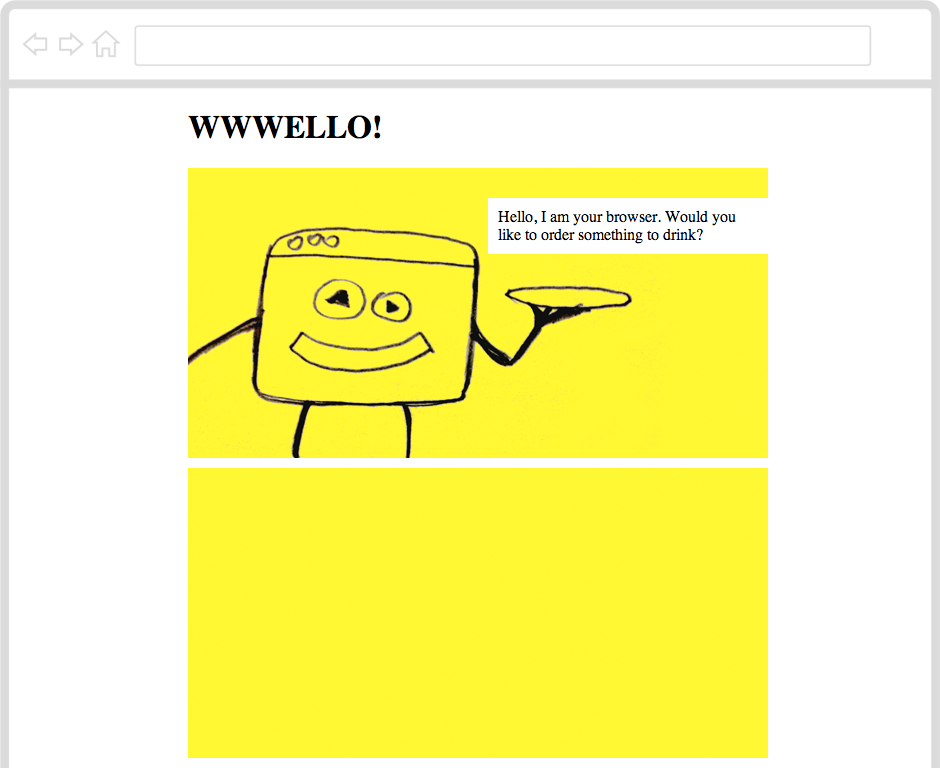
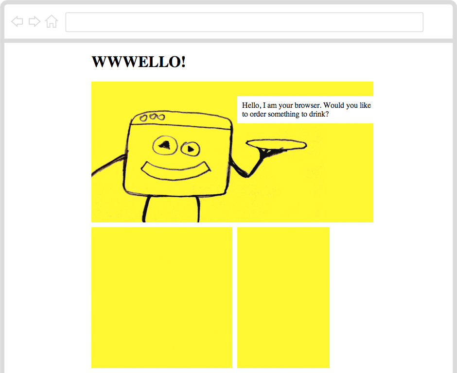
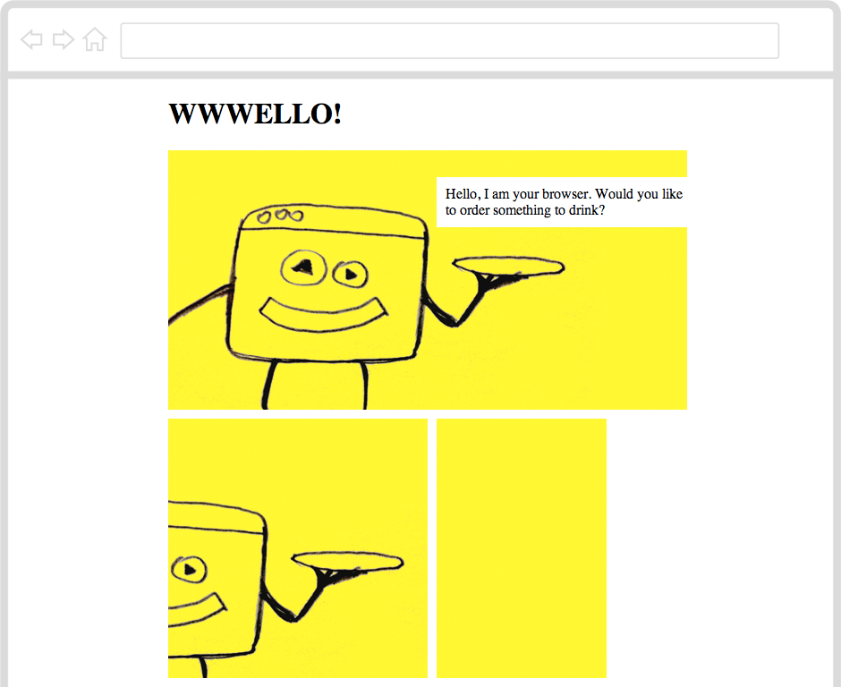
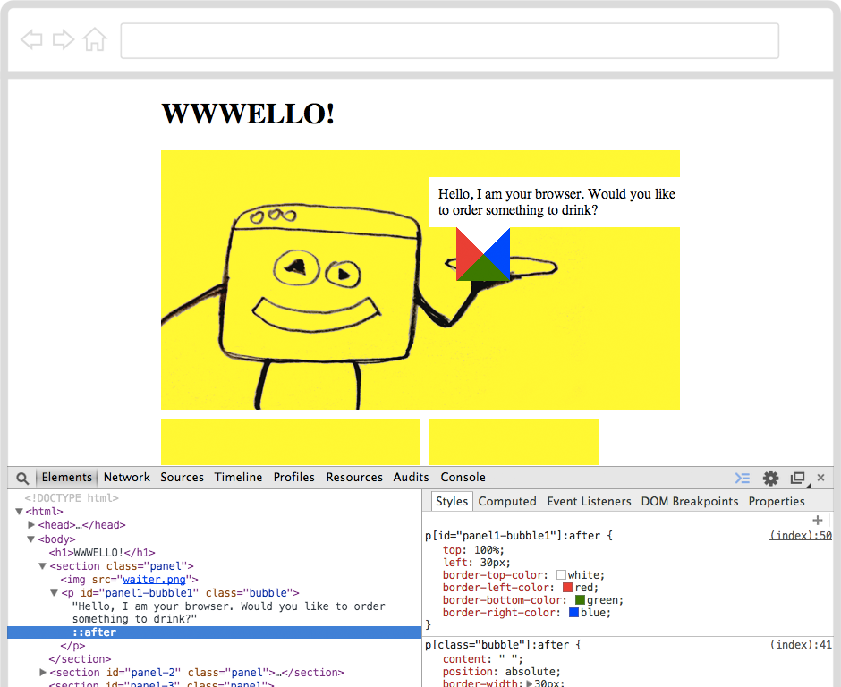

Introduction
Do you like comics? Do you have a story to tell? Can you turn a bunch of images into your own Web-comic?
Step 1: Are you ready?
Activity Checklist
Here is a list of things to check before you dig into your comic.
- Open your code editor. Do you have an app on your computer to write your code?
- NO. Talk to your teacher or volunteer about installing a code editor: we recommend Sublime Text 2.
- YES. Great, move on.
Create a new file.
Here is the skeleton of an HTML1 document.
Copy-paste it into your new file.
<!DOCTYPE html>
<html>
<head>
<title>Code Club comic</title>
<style>
* { box-sizing: border-box; position: relative; }
html, body { height: 100%; }
body
{
max-width: 600px;
margin: 0 auto;
padding-left: 10px;
}
</style>
</head>
<body>
<h1>HELLO!</h1>
</body>
</html>- Save your file. You can save it as whatever you want to call it. Just remember to end your file name with
.htmlso that your computer knows it’s an HTML file. For instance, you could call your filecomic.html. Can you think of a less boring name? - Do you know where your HTML file has gone?
- NO. Ok, it’s somewhere on your computer. Can you find it?
- YES. Good, let’s move on.
- Open your browser2.
- From your browser, open your HTML file . Does it say
HELLO!? - Go back to the code editor. Can you change the
HELLO!text to the title of your comic? - Save your HTML file.
- Back to your browser, can you refresh3 the page where you opened your HTML file?
- Great! Now you’ve got your tools ready: code editor to write your code, browser to debug4 your code.
Step 2: How do you make a panel?
Activity Checklist
What makes a comic, a comic?

To make a comic you put a bunch of images and text in sequence and place them next to each other.
You frame each moment of your comic into a panel.
To make a sequence you need at least two panels.
Let’s start with one panel
<section class="panel">
</section> - Copy-paste this code inside your HTML document. Where? Anywhere between the
<body>opening tag and the</body>closing tag.
Using the class attribute you can classify your HTML elements.
Here we have a particular kind of <section> which we called “panel”. You could call it whatever you like, for example “comic panel” or “cute cat”: class names are entirely up to you. Since we’re making a comic panel, it makes sense to just call it “panel”.
- Save, go to your browser and refresh the page. Do you see a panel?
No, indeed. That’s because your <section class="panel"> is empty and can’t be seen.
You can use CSS5 to make it visible.
section[class="panel"]
{
border-bottom: 10px solid white;
border-right: 10px solid white;
background-color: yellow;
height: 300px;
width: 100%;
}- Copy-paste this code into your HTML document. Where? Anywhere between the
<style>opening tag and the</style>closing tag.
Challenge
Using your browser’s Inspector6, can you work out what those CSS rules do?
Now that you have one panel, can you make another panel under the first one?

Step 3: How do you add images?
Activity Checklist
So far, you have the building block of your comic: the panel.
No matter how many <section> elements you add to your HTML document, as long as you classify them with class="panel" your browser will give them all the same “yellow box” style.
class names are useful for shared rules.
Now, empty panels don’t really tell a story, do they? Why not add images to get your story off the ground?
HTML calls images <img> and wants you to write down exactly where to find an image’s source, or src.
Copy-paste the
waiter.pngimage, from this project’s Resources folder into the folder where you saved your HTML file.Add
<img src="waiter.png">inside one of your panels. That means the image will be nested between the<section class="panel">opening tag and the</section>closing tag.Save, go to your browser and refresh your page. What do you see?

Challenge
Can you make (or find online) images for the first two panels of your comic?
Can you add these images to your comic?
Step 4: How do you make a speech bubble?
Activity Checklist
Now that you have images, you can start writing your story.
In comics, you can use speech bubbles to make your characters “talk”.
A speech bubble is usually a short paragraph, which HTML calls <p>.
Can you add a
<p>element inside your panel, after the<img>?Since this is a special kind of paragraph, can you think of an appropriate
classname for it?
How about this?
<p class="bubble">Hello, I am your browser. Would you like to order something to drink?</p>- Save, go to your browser and refresh the page. What do you see?
Nothing, indeed. That’s because your speech bubble appeared under the image.
Challenge
- Can you move your speech bubble on top of the image?
Using position: absolute; you can position texts and images within your panel, no matter where your browser initially puts them.
p[class="bubble"]
{
background-color: white;
padding: 10px;
margin: 0;
position: absolute;
}Copy-paste the code above into your HTML document. Where? Anywhere between the
<style>opening tag and the</style>closing tag.Save, go to your browser and refresh the page. Where is your speech bubble now?
You can use these CSS properties to move your speech bubble around:
topleftrightbottom
For example, you can try with top: 30px; and then tweak it.

Step 5: How do you make many speech bubbles?
Activity Checklist
What if you want another speech bubble? What if you want many speech bubbles, all in different positions?
class won’t cut it this time, you need another HTML attribute.
Meet id.
<p id="panel1-bubble1" class="bubble">Hello, I am your browser. Would you like to order something to drink?</p>Unlike class, which you can can give to as many HTML elements as you please, there can be only one element in your HTML document with a certain id.
An id is unique, just like you :)
- In your
<style>can you add a new CSS rule, only for one speech bubble? Where? Anywhere between the<style>opening tag and the</style>closing tag.
For example, this rule will apply only to the one bubble identified as panel1-bubble1.
p[id="panel1-bubble1"]
{
top: 30px;
left: 300px;
width: 300px;
}Challenge
Do you know your classes from your ids?
- Can you make many more speech bubbles, give them unique
idnames and position them inside your panels?
You can call them whatever you like: id names are entirely up to you.
Step 6: How do you get many panels on the same row?
Activity Checklist
Your story is coming to life now. How many panels have you got?
You can use id to make panels unique too!
For example, you may want to change the width or height of your panels:
section[id="panel2"]
{
width: 300px;
}
section[id="panel3"]
{
width: 200px;
}Copy-paste the code above into your HTML document. Where? Anywhere between the
<style>opening tag and the</style>closing tag.Can you give the correct
idnames to two panels in your HTML document?
Challenge
What if you want to have those two panels in the same row?
Can you add
float: left;inside yoursection[class="panel"]CSS rule?Save, go to your browser and refresh the page. What do you see?

Step 7: What if images are bigger than panels?
Activity Checklist
Now you know how to change the width or height of your panels.
What if you have an image that is too big for its panel? So big that it overflows into other panels?
Well, there’s a CSS property for that.
overflow: hidden;Challenge
Can you add
overflow: hidden;inside yoursection[class="panel"]CSS rule?Then, how about using these CSS properties to move your images inside your panels?
positiontopleft

EXTRA How do you make different voices?
Activity Checklist
While you were busy styling panels and images, your browser has taken care of styling texts inside your speech bubbles.
What if you want to change the way your texts look?
You can use fonts to “dress” your texts in many ways and express different voices, moods or feelings, for example a whispering voice or a screaming voice.
Experiment with these CSS properties to make your speech bubbles more expressive:
- font-family
- font-size
- text-transform
- letter-spacing
Challenge
Your browser gives you a handful of font families, out of the box. There’s more to comics than that!
Go to Google Fonts and find fonts that suit your story. That page will tell you how to choose, review and use the fonts you like.
Can you add your chosen fonts to your comic?
EXTRA How do you make a speech bubble arrow?
Activity Checklist
Have you noticed that your speech bubbles are missing something?
Yes, that little arrow pointing at your character, which makes it clear who’s talking.
p[class="bubble"]:after
{
content: " ";
position: absolute;
border-width: 30px;
border-style: solid;
}
p[id="panel1-bubble1"]:after
{
top: 100%;
left: 30px;
border-top-color: white;
border-left-color: red;
border-bottom-color: green;
border-right-color: blue;
} Copy-paste the code above into your HTML document. Where? Anywhere between the
<style>opening tag and the</style>closing tag.Save, go to your browser and refresh the page. What do you see?

A white-red-green-blue “jewel” has appeared after your speach bubble.
- Right-click on your speech bubble, then choose Inspect Element to see what is going on.
That “jewel” is, technically speaking, an empty element with a very fat border: 30px.
The top border is white, just like the rest of your speech bubble. The left border is red, the bottom border is green and the right border is blue.
Challenge
- Can you turn the left, right and bottom borders to
transparent?
That leaves you only with the top white border, which looks like an arrow pointing down!
- Now, can you add arrows to your other speech bubbles? Experiment with
topandleftvalues to move your arrows around, and switchborder-colorvalues on (white) and off (transparent) to make your arrows point in the directions you want.
HTML stands for HyperText Markup Language, which is the language that every website in the World “speaks”. To make a website, you teach your computer how to “translate” your ideas into HTML.↩
What’s a browser? A web browser is a special app that knows how to interpret text files written in HTML. The most popular browsers are Internet Explorer, Google Chrome and Mozilla Firefox.↩
How do you refresh a page in the browser? If you’re on a Windows computer, use the keyboard shortcut CTRL+R (that is, hold the CTRL key down and press the R key once). On a Mac, use ⌘+R.↩
What’s debugging? Debugging means to find and correct glitches in your code. It takes both patience and speed, just like catching a flying bug. Luckily, debugging HTML code in your browser is easy: right-click anywhere on a page and choose Inspect Element. This will pop open your browser’s Inspector, where you can see every page’s source code, styles and much more. When you hover over the source code with your mouse, the corresponding HTML element on the page will light up. When you click on an HTML tag in the source code (left panel), you’ll see all its CSS styles (on the right panel).↩
CSS stands for Cascading Style Sheets and it’s the language you can use to tell your browser to change colours, sizes and many other stylistic aspects of your HTML documents.↩
What’s a browser’s Inspector? In your browser, right-click anywhere on a page and choose Inspect Element. This will pop open your browser’s Inspector, where you can see every page’s source code, styles and much more. When you hover over the source code with your mouse, the corresponding HTML element on the page will light up. When you click on an HTML tag in the source code (left panel), you’ll see all its CSS styles (on the right panel).↩